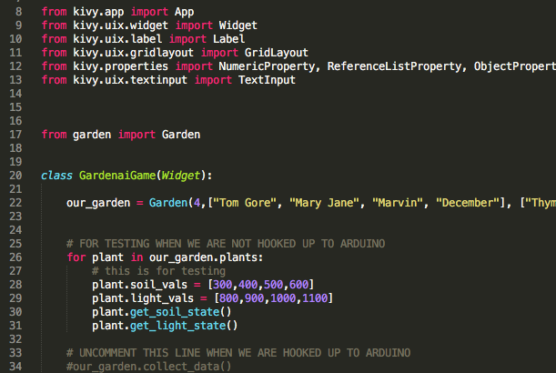

Software
Software
The user interacts with their plant data via a user interface programmed in python, which draws data from arduino serial outputs.
You can view our python GUI, arduino control, and website code here.
The Application
We used the python library Kivy to create the user interface. The user plugs their computer into the system via a USB cable. Then, by running the program, the user can see the status of their plants.
When initializing the application the user can input the number, names, and types of their plants when making a garden instance and the garden makes the number and types of plants that the user inputted. Then the user can run the app and find the necessary information about each of their plants.
Interfacing with Arduino
The python script interfaces with our arduino code and to collect data from the arduino to populate the user interface. The data is collected in real time from the two sensors for each of the four plants (eight in total). The script then creates an average of all of the sensor values and checks them against each of the type of plant that they are for. It reports to the user the status of each of the plants so they can take any necessary action.
This Website
This website is made using HTML, CSS, along with a html5 template, Spectral, that houses all of our design.